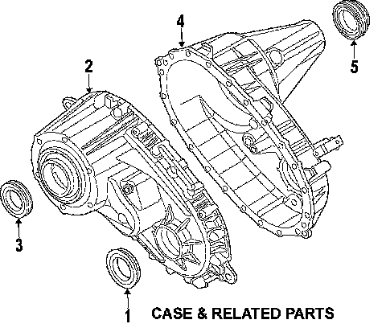
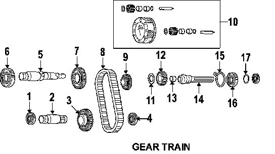

Operation CHARM
: Car repair manuals for everyone.
Home
>>
Cadillac
>>
2007
>>
Escalade ESV AWD V8-6.2L
>>
Parts and Labor
>>
Transmission and Drivetrain
>>
Transfer Case
>>
Images
Images
Case & Related Parts, 4481:

Gear Train, 4481:
